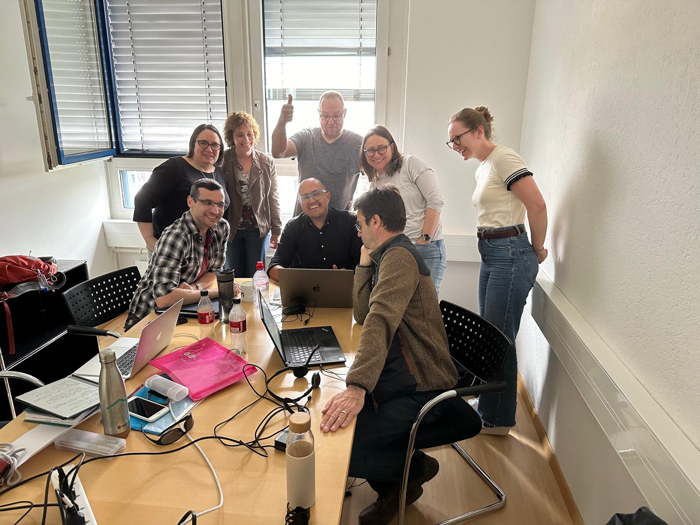
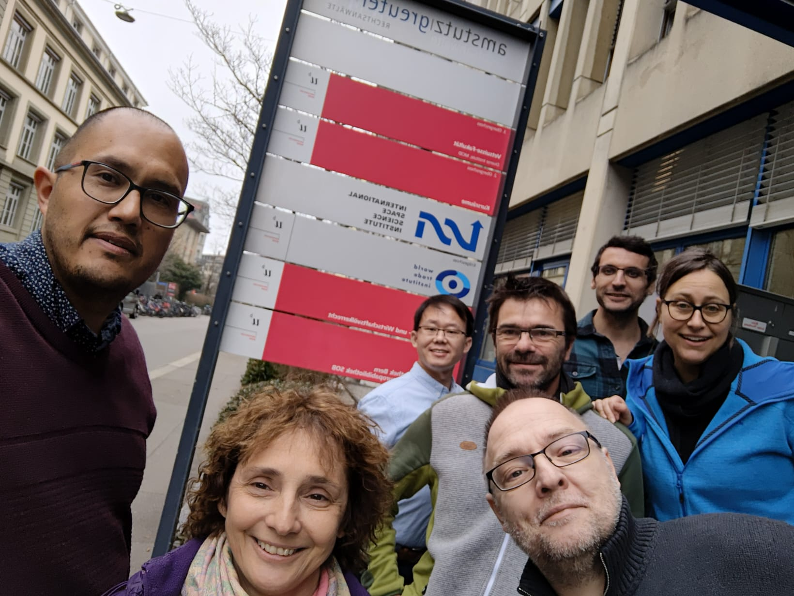
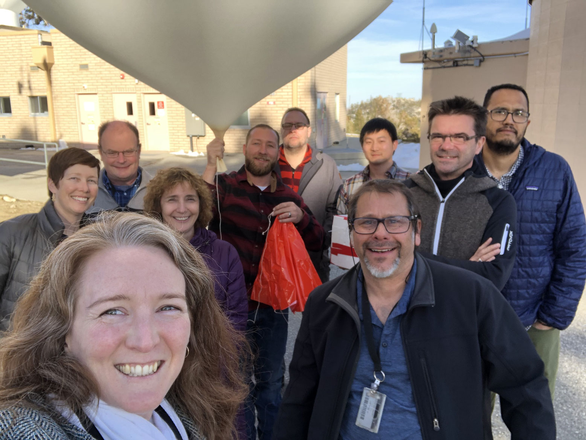
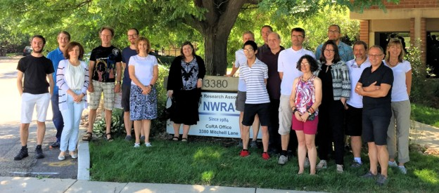

Overview
The composition of the Upper Troposphere and Lower Stratosphere (UTLS) is controlled by dynamical processes ranging from the turbulent to the planetary wave scale. The tropopause and the jets act as barriers to transport that are highly variable in space and time. The variability and tracer gradients across these barriers challenge a quantitative description of the global UTLS composition.
During OCTAV-UTLS phase 1 the role of the variability of the barrier location for the distribution of ozone was identified based on multi-platform observations. It was shown that data consistency across different observation platforms is substantially improved when accounting for the variability of these barriers. This directly feeds into trend estimates of composition in the UTLS, leading to reduced uncertainties when such estimates account for the barrier location.
This activity will focus on improving the quantitative understanding of the UTLS’s role in climate and the impacts of stratosphere-troposphere exchange (STE) processes on air quality. Achieving this goal requires a detailed characterization of existing measurements (from aircraft, ground-based, balloon, and satellite platforms) in the UTLS, including understanding how their quality and sampling characteristics (spatial and temporal coverage, resolution) affect the representativeness of these observations.
Phase 2 OCTAV-UTLS will focus on dynamical drivers of the UTLS composition variability. Stirring, shear, turbulence, and radiatively-driven processes acting on composition gradients at the jets and the tropopause lead to exchange and mixing. The underlying processes vary strongly by season and location, with poorly quantified impacts on global UTLS composition.
OCTAV-UTLS will use comprehensive observational, reanalysis, and model data to disentangle the key dynamical factors controlling UTLS composition in the context of regional variability and (sub-)seasonal to long-term changes.
We will extend our studies of ozone to other species, specifically focusing on water vapour as a key radiative species in the UTLS, carbon monoxide as a dynamical tracer, and aerosol distributions (which are poorly constrained by observations and thus have highly uncertain distributions in the UTLS).
OCTAV-UTLS will further benefit from the synergy with the ISSI International Team “Climate Impacts of Stratospheric Water Vapour”, which brings together leading experts in observations, atmospheric dynamics, and modelling to advance understanding of UTLS water vapour variability, trends, and climate impacts through coordinated international collaboration.
The topics covered by OCTAV-UTLS are directly linked to the German collaborative research center “The tropopause region in a changing atmosphere” (TPChange) which focus on coupling processes between composition, dynamics and radiation in the tropopause region to understand the role of the UTLS in a changing climate system.
Co-leads
| Name | Institution |
|---|---|
| Peter Hoor | Johannes Gutenberg University, Mainz, Germany |
| Christian Rolf | Forschungszentrum Jülich GmbH, Jülich, Germany |
| Luis Millán | NASA Jet Propulsion Laboratory, Caltech, CA, USA |
Steering Committee
| Name | Institution |
|---|---|
| Harald Bönisch | Karlsruhe Institute of Technology, Germany |
| Rob Damadeo | NASA Langley Research Center, USA |
| Michaela Hegglin | University of Reading, UK / Forschungszentrum Jülich, Germany |
| Daniel Kunkel | Johannes Gutenberg University Mainz, Germany |
| Thierry Leblanc | NASA Jet Propulsion Laboratory, Caltech, CA, USA |
| Gloria Manney | NorthWest Research Associates, USA |
| Irina Petropavlovskikh | NOAA/CIRES, University of Colorado, USA |
| Susann Tegtmeier | University of Saskatchewan, Canada |
| Kaley Walker | University of Toronto, Canada |
Publications
OCTAV-UTLS publications
- Millán, L. et al. (2025): Ozone trends in the upper troposphere‐lower stratosphere using equivalent latitude‐potential temperature coordinates. doi:10.1029/2025GL118651
- Millán, L. et al. (2024): Exploring ozone variability in the upper troposphere and lower stratosphere using dynamical coordinates. doi:10.5194/acp-24-7927-2024
- Millán, L. et al. (2023): Multi-parameter dynamical diagnostics for upper tropospheric and lower stratospheric studies. doi:10.5194/amt-16-2957-2023
- Jeffery, P. et al. (2022): Water vapour and ozone in the upper troposphere–lower stratosphere: global climatologies from three Canadian limb-viewing instruments. doi:10.5194/acp-22-14709-2022
JETPAC publications
- Manney, G. et al. (2021): Seasonal and Regional Signatures of ENSO in Upper Tropospheric Jet Characteristics from Reanalyses. doi:10.1175/JCLI-D-20-0947.1
- Manney, G. and Hegglin, M. (2018): Seasonal and Regional Variations of Long-Term Changes in Upper-Tropospheric Jets from Reanalyses. doi:10.1175/JCLI-D-17-0303.1
- Manney, G. et al. (2017): Reanalysis comparisons of upper tropospheric–lower stratospheric jets and multiple tropopauses. doi:10.5194/acp-17-11541-2017
- Manney, G. et al. (2014): Climatology of Upper Tropospheric–Lower Stratospheric (UTLS) Jets and Tropopauses in MERRA. doi:10.1175/JCLI-D-13-00243.1
- Manney, G. et al. (2011): Jet characterization in the upper troposphere/lower stratosphere (UTLS): applications to climatology and transport studies. doi:10.5194/acp-11-6115-2011
Related publications
- Tinney, E. N. et al. (2026): Characterizing variability and vertical structure of water vapor in the extratropical lower stratosphere. doi:10.5194/egusphere-2026-412
- Orr, L. et al. (2026): Trends in Some Characteristics of the Warm-Season Tropopause-Level Jet Streams in Both Hemispheres. doi:10.5194/egusphere-2026-3977
- Lee, M. H. F. et al. (2026): Potential vorticity modification by turbulence in the upper troposphere and lower stratosphere – Part 1: Mechanistic understanding in an upper-level jet-front system. doi:10.5194/egusphere-2026-4184
- Cohen, Y. et al. (2025): Evaluation of O₃, H₂O, CO, and NOy climatologies simulated by four global models in the upper troposphere–lower stratosphere with the IAGOS measurements. doi:10.5194/acp-25-5793-2025
- Wright, J. S. et al. (2025): Evaluating reanalysis representations of climatological trace gas distributions in the Asian monsoon tropopause layer. doi:10.5194/acp-25-9617-2025
- Weyland, F. et al. (2025): Long-term changes in the thermodynamic structure of the lowermost stratosphere inferred from reanalysis data. doi:10.5194/acp-25-1227-2025
- Zhang, S. et al. (2025): Covariability of dynamics and composition in the Asian monsoon tropopause layer from satellite observations and reanalysis products. doi:10.5194/acp-25-10109-2025
- Turhal, K. et al. (2024): Variability and trends in the potential vorticity (PV)-gradient dynamical tropopause. doi:10.5194/acp-24-13653-2024
- Keel, T. et al. (2024): Exploring Uncertainty of Trends in the North Pacific Jet Position. https://doi.org/10.1029/2024GL109500
- Hoffmann, L. & Spang, R. (2022): An assessment of tropopause characteristics of the ERA5 and ERA-Interim meteorological reanalyses. doi:10.5194/acp-22-4019-2022
- Breeden, M. L. et al. (2021): The spring transition of the North Pacific jet and its relation to deep stratosphere-to-troposphere mass transport over western North America. doi:10.5194/acp-21-2781-2021
- Kunkel, D. et al. (2019): Evidence of small-scale quasi-isentropic mixing in ridges of extratropical baroclinic waves. doi:10.5194/acp-19-12607-2019
- Xian, T. & Homeyer, C. R. (2019): Global tropopause altitudes in radiosondes and reanalyses. doi:10.5194/acp-19-5661-2019
- Cohen, Y. et al. (2018): Climatology and long-term evolution of ozone and carbon monoxide in the upper troposphere–lower stratosphere (UTLS) at northern midlatitudes, as seen by IAGOS from 1995 to 2013. doi:10.5194/acp-18-5415-2018
- Boothe, A. C. & Homeyer, C. R. (2017): Global large-scale stratosphere–troposphere exchange in modern reanalyses. doi:10.5194/acp-17-5537-2017
Newsletters
APARC Newsletter No. 64, 2025, pp. 3-7: Report on the APARC OCTAV-UTLS ISSI Working Group Meetings, Bern, Switzerland, by Jeffery, P. et al.
APARC Newsletter No. 59, 2022, p. 23: OCTAV-UTLS activity: update from the March 2022 workshop, by Petropavlovskikh, I. et al.
APARC Newsletter No. 55, 2020, p. 17: The third SPARC OCTAV-UTLS meeting, by Leblanc, T. et al.
APARC Newsletter No. 53 (2019): Report on the second SPARC OCTAV-UTLS meeting, Hoor, P. et al.
APARC Newsletter No. 50 (2018): Report on the first SPARC OCTAV-UTLS meeting, by Kunkel, D. et al.
Meetings
Upcoming Events
We'll be hosting virtual meetings every few months to bring our international community together. More information will be announced soon.
Past Events
OCTAV Meeting at Karlsruhe Institute of Technology, Karlsruhe, Germany
26-27 June 2025
International Space Science Institute (ISSI) workshop in Bern, Switzerland
30 April – 3 May 2024

International Space Science Institute (ISSI) workshop in Bern, Switzerland
28 February – 3 March 2023

OCTAV Meeting at Table Mountain Facility, Wrightwood, CA, USA
3-5 March 2020

OCTAV Meeting at Johannes Gutenberg University Mainz, Germany
2018

OCTAV Meeting at NorthWest Research Associates, Boulder, CO, USA
2017

Contacts
For questions, contact octav.utls@gmail.com.